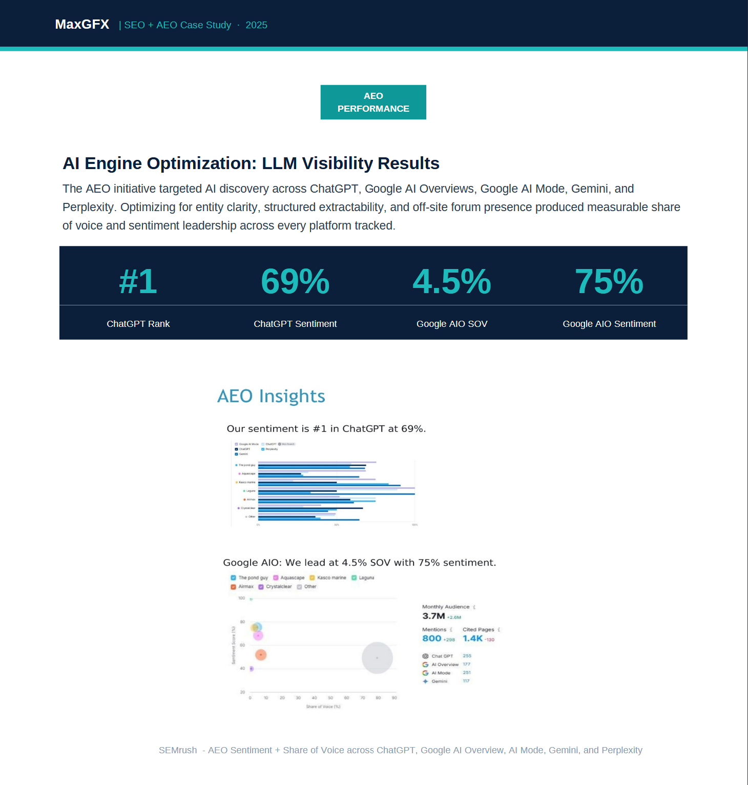
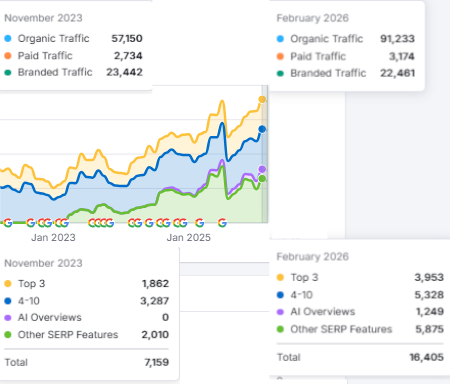

When Google's Helpful Content Update rewrote the ranking rules, most sites scrambled. This one turned the disruption into a systematic advantage across both traditional search and every major AI engine.
Starting in 2022, Google's Helpful Content Update changed how content gets evaluated at a structural level. After the September 2023 Helpful Content Update, AI classifiers began scoring pages for real-world helpfulness and semantic completeness — how thoroughly a piece of content covers its subject — rather than keyword density. Thin coverage lost ground fast. A direct competitor in this category dropped 71% in organic traffic almost immediately. This client had the same structural weakness in a subset of pages, but our strategy reversed the decline before it became a crisis.
The difference was the response. Rather than treating the update as a recovery problem, the strategy started with a question: if the classifier evaluates content the way a knowledgeable reader would, what does content built for that standard actually look like? That answer became the architecture for everything that followed — and it transferred directly into AI engine visibility once those platforms reached scale.
The competitive signal: A named competitor dropped 71% post-HCU while this client held ground. That gap is the difference between content optimized for keyword density and content built to demonstrate genuine topical authority. The update made that distinction measurable for the first time.
Google's HCU classifier maps how words relate to wider concepts. A page that covers only its primary search term has a thin semantic footprint. One that also covers the related entities, mechanisms, treatments, and contextual terms that a knowledgeable reader would expect has a rich one. Every revision and new article was structured around building that depth — answer-forward introductions in the first 500 words, heading structure designed to give the classifier clear landmarks, and supporting sections that extend the semantic web rather than restate the headline.
LLMs extract content in chunks. They favor clearly bounded answers, explicit entity relationships, and pages that return a coherent response when partially quoted. Priority pages were restructured with this extraction pattern in mind: semantic HTML, clean content hierarchy, no buried answers. The same architecture that earned HCU recovery positions now gets cited by ChatGPT and Gemini.
A brand that exists only on its own domain is an entity with thin corroboration in AI training data. Establishing genuine, contribution-first presence in the communities where the target audience already asks relevant questions creates the third-party discussion layer that AI retrieval systems weight heavily. This was built systematically, as a subject-matter contributor rather than a brand account.
This client leads ChatGPT sentiment in its category at 69% favorable. On Google AI Overviews, it holds 4.5% share of voice with 75% sentiment, outperforming the category's largest SOV holder, which sits at 6.8% SOV but only 52% sentiment. Higher share of voice with lower trust is the weaker competitive position when AI engines are synthesizing purchase recommendations.

AEO Competitive Landscape — Brand Sentiment + Share of Voice Across AI Platforms
The 694 number-one AI Overview positions represent pages where this brand is the featured extracted answer. That number grew 574% year over year, reflecting content architecture that was already optimized for extractability before Google AI Overviews reached volume. The work preceded the opportunity.
| Brand | AI Platform | Share of Voice | Sentiment | Strategic Position |
|---|---|---|---|---|
| This ClientAISOdog | ChatGPT | — | 69% | Category Sentiment Leader |
| This ClientAISOdog | Google AIO | 4.5% | 75% | High Trust, Efficient SOV |
| Competitor A | Google AIO | 6.8% | 52% | High Visibility, Lower Trust |
The same semantic depth that earns AI citations also gains traditional rankings. Total Fron-Page keywords grew 129%. Top-3 positions increased 112%. SERP feature acquisitions rose 192%. One content strategy, two systems, simultaneous gains.

SEMRush Pre/Post — Front-Page Keywords +129 · Top-3 +112% · AI Overviews +1,249 · SERP Features +192%
Most brands do not know what AI engines say about them, how often they are cited, or why competitors get recommended instead. An Audit surfaces all of it.
Book an AI Visibility Audit